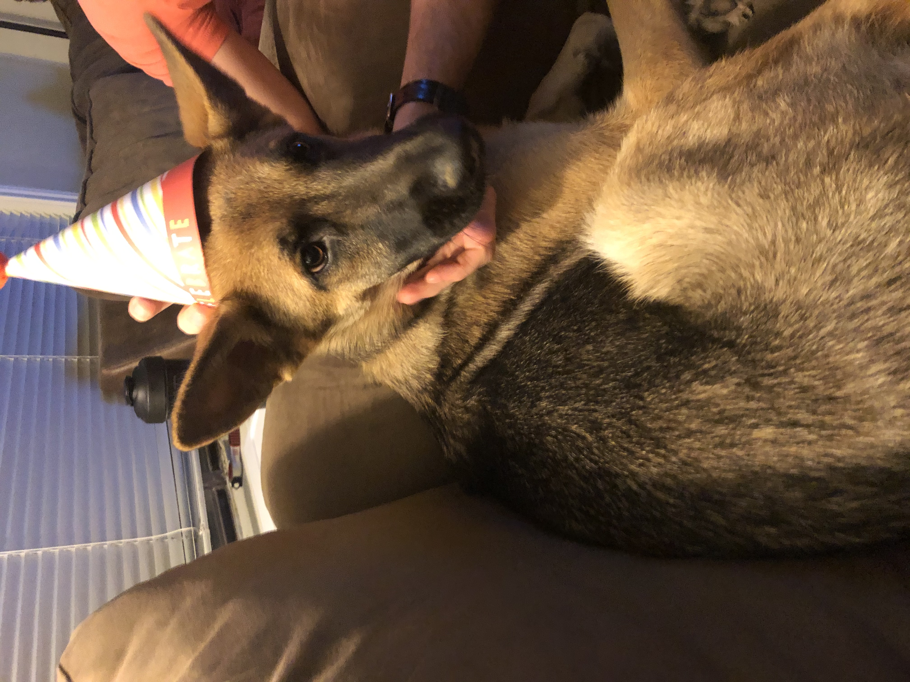

About Me
Who am I? Well, I was raised in College Station which is a large part of the reason that i decided to continue my eduction close to home. I've been in love with the aggie sprit for many years now.
When I was going through high school, I had a large interest in computers and compuing in general. It was only when I took my school's advanced information technology classes that I discovered that
I was not only passionate but somewhat skilled with computers. This combination of passion and skill convinced me to apply the the Aggie school of engineering which led me to the road I'm on today.
I'm currently enrolled in the computer engineering school with a focus in electrical engineering however I've also taken the time to get a minor in math. This semester I'm trying to join some clubs, I'm focusing on the
Aggie Satalight club
because I'm very interested in space and I think it would be a good application of my skills i've learned in college. The reason I'm interested in this club is I have always been a huge fan of all things space
even from an early age where I attended an overnight campout inside of the Houston Space Center.
This past summer, my roomate got a dog and I have become her fun uncle. She is an absolute delight and I love everything about her. I take her on a walk with me once a day
and this helps me to get outside and out of my own head. I'm a big supporter of the adopt don't shop mentality and I encourage everyone to take getting an animal very seriously.
It was my birthday recently so she has my hat on. She does not like it.

